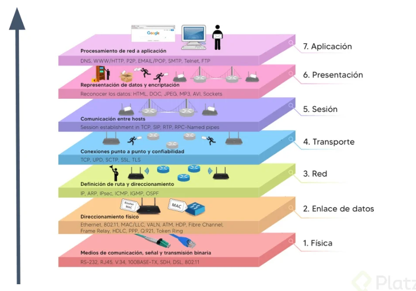
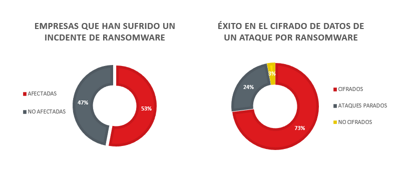

> CNO V - Seguridad Informática _
> Universidad Politécnica de San Luis Potosí _
> Octavo semestre _
Actividad 02 | X.800 y RFC 4949
Al realizar un análisis de servicios de seguridad es necesario utilizar ciertas recomendaciones como lo son la aplicación de los seis servicios de seguridad los cuales son definidos en el ITU-T X.800. La recomendación X.800 tiene como objetivo proporcionar una serie de conceptos la cual sirve para lograr entender, planificar y además implementar la seguridad en redes de comunicación y sistemas interconectados relacionados con la seguridad OSI.
Por otro lado, es capaz de definir principios, servicios, mecanismos y poder ser base para normas como lo son la ISO/IEC 7498-2 y la serie de normas ISO 27000. Sus objetivos principales son proteger datos contra diferentes tipos de amenazas, asegurar la autenticidad, garantizar disponibilidad de servicios de red y ofrecer una estructura de referencia para el diseño e implementación de controles de seguridad en las capas del modelo OSI.

Imagen 1: Modelo OSI.
La segunda recomendación es la utilización de RFC 4949 el cual es un glosario oficial y uno de los documentos más importantes en materia de la terminología y fundamentos conceptuales de seguridad informática, además de ser emitido por la IETF (Internet Engineering Task Force). Durante esta actividad se realizará el análisis de diversos escenarios utilizando X.800 y RFC 4949 para identificar, explicar y documentar vulnerabilidades en contextos reales.
En múltiples incidentes atribuidos al grupo LockBit, organizaciones públicas y privadas han sufrido el cifrado masivo de servidores tras un acceso inicial no autorizado. Antes de ejecutar el ransomware, los atacantes exfiltraron información sensible y posteriormente amenazaron con su publicación, evidenciando un compromiso simultáneo de la confidencialidad, la integridad y la disponibilidad. Desde el enfoque del RFC 4949, el incidente se clasifica como un multi-stage attack con data breach y availability attack, donde la indisponibilidad del sistema es solo una fase final del daño. La ausencia de respaldos inmutables y de detección temprana permitió que el impacto fuera total.
| Elemento | Respuesta |
|---|---|
| Servicios X.800 comprometidos | Confidencialidad, integridad de datos y disponibilidad. |
| Definición(es) aplicable(s) RFC 4949. | Attack: Ataque real a la seguridad del sistema que se deriva de una amenaza inteligente. Data confidentiality: Propiedad que los datos no se divulguen sin antes una autorización previa. Data integrity: Propiedad que los datos no puedan ser modificados, destruidos o perdidos de una manera accidental o no autorizada. Availability: Propiedad de un sistema o recurso de sistema de ser accesible y utilizable bajo demanda. Malicious logic: Hardware, software o firmware incluido intencionalmente en un sistema con fines nocivos. |
| Tipo de amenaza. | Externa (Acceso no autorizado) |
| Vector de ataque. | Acceso no autorizado, modificación y destrucción de servidores, sistemas no disponibles. |
| Impacto técnico / operativo. | Exposición de datos sensibles, indisponibilidad del sistema. |
| Medida de control recomendada. | Realizar respaldos constantemente además de educar a los trabajadores para que no abran links indebidos y revisen que todo documento enviado sea oficial, uso de MFA, monitoreos constantes de red. |
En diversos casos documentados, bases de datos completas quedaron accesibles públicamente debido a errores de configuración en servicios de almacenamiento en la nube. No existió una explotación técnica sofisticada, sino una falla en el control de acceso, lo que derivó directamente en la pérdida de confidencialidad de los datos. El RFC 4949 describe este tipo de incidentes como misconfiguration y exposure, subrayando que la amenaza no 3 siempre implica malware o intrusión activa. El impacto suele ser legal y reputacional, aun cuando no se pueda demostrar acceso malicioso
| Elemento | Respuesta |
|---|---|
| Servicios X.800 comprometidos | Control de acceso, confidencialidad de los datos. |
| Definición(es) aplicable(s) RFC 4949. | Exposure: Acción de amenaza donde los datos sensibles se liberan de forma no autorizada. Access control: Protección de los recursos del sistema contra el acceso no autorizado. Data confidentiality: Propiedad que los datos no se divulguen sin antes una autorización previa. |
| Tipo de amenaza. | Interna (Accidental) |
| Vector de ataque. | Exposición pública de bases de datos, debido a un fallo de configuración en almacenamiento en la nube. |
| Impacto técnico / operativo. | Confidencialidad y daño reputacional perdida. |
| Medida de control recomendada. | Realizar auditorías constantemente con el fin de encontrar posibles fallas en los sistemas además de contar con capacitaciones sobre la importancia de la protección de datos. |
Un proveedor legítimo de software fue comprometido y distribuyó una actualización que incluía código malicioso, afectando a cientos de organizaciones que confiaban en él. Este escenario refleja una violación grave de la integridad de los sistemas y, en muchos casos, de la confidencialidad, al permitir accesos no autorizados posteriores. El RFC 4949 lo identifica como supply chain attack, destacando el abuso de relaciones de confianza. El daño es particularmente crítico porque rompe el supuesto de legitimidad del software firmado.
| Elemento | Respuesta |
|---|---|
| Servicios X.800 comprometidos | Integridad de los sistemas, confidencialidad. |
| Definición(es) aplicable(s) RFC 4949. | Data confidentiality: Propiedad que los datos no se divulguen sin antes una autorización previa. Data integrity: Propiedad que los datos no puedan ser modificados, destruidos o perdidos de una manera accidental o no autorizada. System integrity: Sistema que puede realizar sus actividades sin afectaciones, libre de manipulaciones no autorizadas. Trojan Horse: Programa con función oculta y maliciosa que evade mecanismos de seguridad. |
| Tipo de amenaza. | Externa (Supply Chain Attack) |
| Vector de ataque. | Inyección de código malicioso en software legal para su próxima distribución. |
| Impacto técnico / operativo. | Gran daño en la confianza de legitimidad del software, accesos no autorizados. |
| Medida de control recomendada. | Verificar firmas digitales de las actualizaciones a instalar, monitoreos constantes. |
Mediante campañas de phishing, atacantes obtuvieron credenciales válidas y accedieron a sistemas corporativos durante meses sin levantar alertas. Aunque la autenticación funcionó técnicamente, el servicio de autenticación fue comprometido al basarse en credenciales robadas, afectando también el control de acceso. Según el RFC 4949, se trata de un credential compromise con authentication failure conceptual, no técnica. La falta de MFA y de monitoreo de comportamiento facilitó la persistencia del atacante.
| Elemento | Respuesta |
|---|---|
| Servicios X.800 comprometidos | Autenticación, control de acceso. |
| Definición(es) aplicable(s) RFC 4949. | Authentication: Proceso o verificación de una entidad del sistema con el fin de encontrar un valor especifico. Credential: Datos que se transfieren para establecer la identidad de una entidad. Compromise: Divulgación, modificación o uso no autorizado de datos sensibles. Phishing: Técnica para adquirir datos sensibles disfrazándose de una persona con buena reputación. |
| Tipo de amenaza. | Externa (Phishing) |
| Vector de ataque. | Se utilizo phishing para el robo de credenciales validas para el acceso al sistema. |
| Impacto técnico / operativo. | Acceso no detectado y no autorizado a sistemas, afectaciones en operaciones diarias. |
| Medida de control recomendada. | Implementación de MFA, monitoreos diarios de accesos, cambio frecuente de contraseñas. |
En ataques de ransomware avanzados, los atacantes eliminaron o cifraron los respaldos antes de afectar los sistemas productivos. Este hecho compromete directamente la disponibilidad y la integridad de la información, al impedir la recuperación. El RFC 4949 clasifica este comportamiento como data destruction y availability attack, evidenciando intención deliberada de maximizar el daño. La inexistencia de respaldos offline o inmutables convierte el incidente en catastrófico.
| Elemento | Respuesta |
|---|---|
| Servicios X.800 comprometidos | Disponibilidad, integridad. |
| Definición(es) aplicable(s) RFC 4949. | Data integrity: Propiedad que los datos no puedan ser modificados, destruidos o perdidos de una manera accidental o no autorizada. Availability: Propiedad de un sistema o recurso de sistema de ser accesible y utilizable bajo demanda. Malicious logic: Hardware, software o firmware incluido intencionalmente en un sistema con fines nocivos. |
| Tipo de amenaza. | Externa (data destruction) |
| Vector de ataque. | Destrucción de respaldos antes de afectar sistemas productivos. |
| Impacto técnico / operativo. | Imposibilidad de recuperación respaldos, costos altos en caso de rescate. |
| Medida de control recomendada. | Crear respaldos offline, monitoreo en respaldos. |
Un empleado con acceso legítimo extrajo bases de datos completas y las vendió a terceros, sin explotar vulnerabilidades técnicas. El servicio afectado fue principalmente la confidencialidad, junto con fallas en el control de acceso por exceso de privilegios. El RFC 4949 define este escenario como insider threat, destacando que el riesgo interno puede ser tan grave como el externo. La carencia de monitoreo y de políticas de mínimo privilegio fue determinante.
| Elemento | Respuesta |
|---|---|
| Servicios X.800 comprometidos | Confidencialidad, control de acceso. |
| Definición(es) aplicable(s) RFC 4949. | Data confidentiality: Propiedad que los datos no se divulguen sin antes una autorización previa. Access control: Protección de los recursos del sistema contra el acceso no autorizado. Insider: Usuario que accede a un sistema que se encuentra dentro del perímetro de seguridad del sistema. |
| Tipo de amenaza. | Interna (Ataque malicioso) |
| Vector de ataque. | Abuso de privilegios legítimos, extracción y venta de bases de datos por empleado. |
| Impacto técnico / operativo. | Filtración de bases de datos sin uso de vulnerabilidades técnicas. |
| Medida de control recomendada. | Monitoreo de accesos internos, auditorias, pocos privilegios a usuarios. |
Tras un ataque, los registros del sistema quedaron cifrados o alterados, impidiendo reconstruir la secuencia de eventos. Esto compromete la integridad de los datos y el no repudio, ya que no es posible demostrar qué ocurrió ni quién fue responsable. Desde el RFC 4949, se trata de una violación de evidentiary integrity y del audit trail. El impacto no solo es técnico, sino también probatorio y legal.
| Elemento | Respuesta |
|---|---|
| Servicios X.800 comprometidos | Integridad de los datos, no repudio. |
| Definición(es) aplicable(s) RFC 4949. | Data integrity: Propiedad que los datos no puedan ser modificados, destruidos o perdidos de una manera accidental o no autorizada. Non-repudiation service: Servicio que proporciona información contra la falsificación negativa. |
| Tipo de amenaza. | Externa (violación a la integridad) |
| Vector de ataque. | Cifrado de registros del sistema, imposibilidad de reconstrucción. |
| Impacto técnico / operativo. | No es posible la reconstrucción de los eventos por lo cual no se puede obtener un culpable. |
| Medida de control recomendada. | Protección contra escritura en registros del sistema, respaldos en tiempo real de ser posible. |
Una actualización mal ejecutada provocó la caída simultánea de múltiples servicios críticos a nivel global. Aunque no existió un atacante, el servicio de disponibilidad fue gravemente afectado. El RFC 4949 contempla estos eventos como operational failure, recordando que la seguridad también se ve afectada por errores internos. La falta de pruebas previas y planes de reversión amplificó el impacto.
| Elemento | Respuesta |
|---|---|
| Servicios X.800 comprometidos | Disponibilidad |
| Definición(es) aplicable(s) RFC 4949. | Availability: Propiedad de un sistema o recurso de sistema de ser accesible y utilizable bajo demanda. Failure control: metodología utilizada para proporcionar recuperación de los sistemas a prueba de fallos. |
| Tipo de amenaza. | Interna (fallo en proceso de actualización) |
| Vector de ataque. | Actualización mal ejecutada o defectuosa. |
| Impacto técnico / operativo. | Interrupción de servicios críticos |
| Medida de control recomendada. | Pruebas en servidores de prueba, posibilidad de realizar rollbacks. |
Atacantes replicaron sitios y correos oficiales para engañar a ciudadanos y obtener información sensible. Este escenario afecta la autenticación, al suplantar identidades legítimas, y la confidencialidad de los datos recolectados. El RFC 4949 lo clasifica como masquerade y phishing, subrayando el componente de ingeniería social. La ausencia de mecanismos de autenticación del dominio y de concientización facilitó el éxito del ataque.
| Elemento | Respuesta |
|---|---|
| Servicios X.800 comprometidos | Autenticación, confidencialidad. |
| Definición(es) aplicable(s) RFC 4949. | Authentication: Proceso o verificación de una entidad del sistema con el fin de encontrar un valor especifico. Data confidentiality: Propiedad que los datos no se divulguen sin antes una autorización previa. Phishing: Técnica para adquirir datos sensibles disfrazándose de una persona con buena reputación. Masquerade: Amenaza por la que una entidad obtiene acceso al sistema o realiza actos maliciosos haciéndose pasar por una entidad autorizada. |
| Tipo de amenaza. | Externa (Phishing, masquerade) |
| Vector de ataque. | Replicación de correos para engañar y obtener datos de usuarios. |
| Impacto técnico / operativo. | Robo de credenciales y engaño a usuario |
| Medida de control recomendada. | Autenticación de dominio y confidencialidad de usuarios. |
En algunos incidentes, tras exfiltrar información, los atacantes ejecutaron acciones destructivas para borrar sistemas completos y eliminar rastros. Se produce un compromiso total de la confidencialidad, la integridad y la disponibilidad, configurando uno de los peores escenarios posibles. El RFC 4949 describe este patrón como destructive attack, donde el objetivo no es solo el lucro, sino el daño irreversible. La detección tardía impidió cualquier contención efectiva.
| Elemento | Respuesta |
|---|---|
| Servicios X.800 comprometidos | Confidencialidad, integridad, disponibilidad. |
| Definición(es) aplicable(s) RFC 4949. | Data confidentiality: Propiedad que los datos no se divulguen sin antes una autorización previa. Data integrity: Propiedad que los datos no puedan ser modificados, destruidos o perdidos de una manera accidental o no autorizada. Availability: Propiedad de un sistema o recurso de sistema de ser accesible y utilizable bajo demanda. |
| Tipo de amenaza. | Externa (destrucción de sistemas) |
| Vector de ataque. | Ejecuciones de malwares los cuales destruían sistemas completos y además de poder eliminar rastros. |
| Impacto técnico / operativo. | Daño irreversible a los sistemas además de poder eliminar el rastro de estos mismos ataques. |
| Medida de control recomendada. | Detecciones de posibles ataques, planes de recuperación de datos. |
Información adicional.

Imagen 2: Estadisticas de ransomware.
Se puede concluir que la gestión de la seguridad informática requiere de una base estandarizada para ser efectiva. La aplicación práctica de la recomendación ITU-T X.800 demostró ser una herramienta de diagnóstico, permitiendo identificar qué servicios de seguridad (como la integridad, confidencialidad o disponibilidad) fueron vulnerados en cada caso, independientemente de si la causa raíz fue un ataque malicioso externo o un error operativo interno.
Trabajar con RFC 4949 fue de mucha ayuda al poder obtener distintas definiciones de manera precisa y con la confianza de saber que son definiciones confiables. Al utilizar definiciones estandarizadas por la IETF, se logró categorizar las amenazas, diferenciando conceptos críticos como "failure" de "attack", o "masquerade" de "exposure". Esto fue muy importante para evitar confusiones.